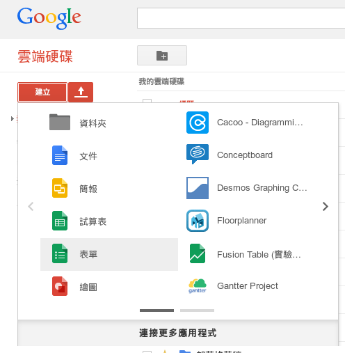
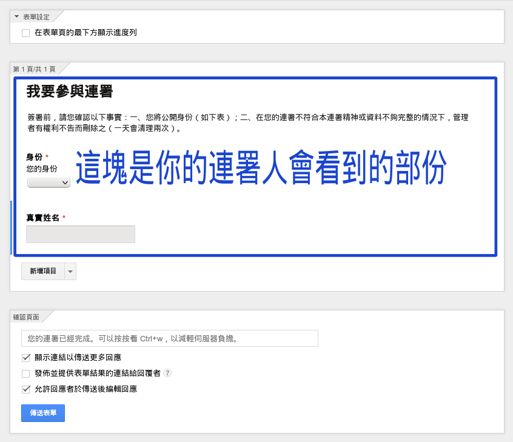
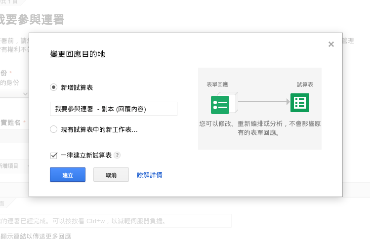
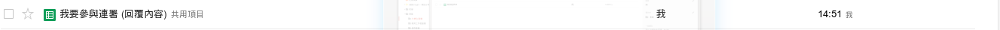
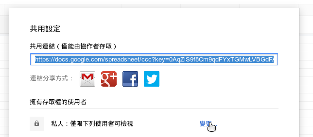
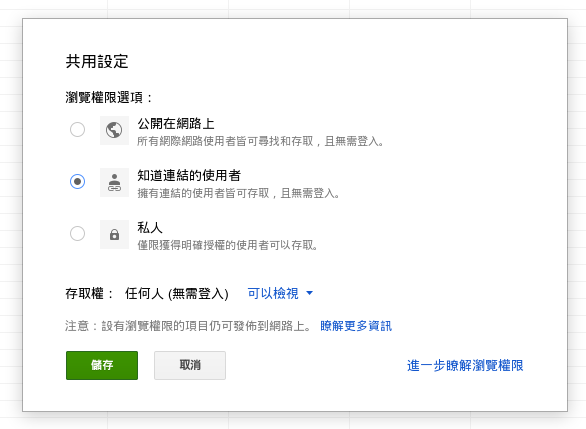
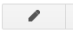
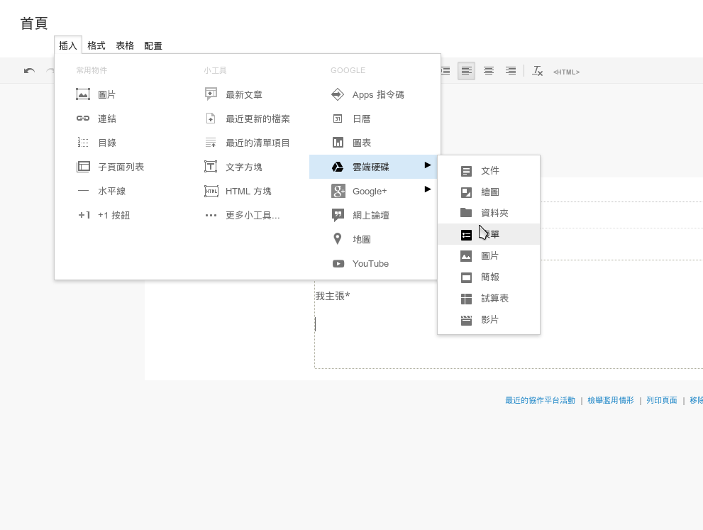
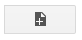

舉辦連署
CWJB 工作室在此提供一個建立「實名連署」的基本方法，即使你的電腦技術不足，在這個方法中，也能
一步一步建出一個連署網站。
為了讓你的連署足夠有影響力，我們也會提供一些基本方針。
先看一下由本工作室所建構的連署網站：
- 學界支持婚姻平權連署 （此網站可能包含更困難的技術）
- 力挺同性婚姻學生連署
- 基層教師支持婚姻平權連署
在建立連署之前的前製工作
- 確立連署群體：先初步定義這份連署書是要給誰連署的，之後也必須進一步不斷釐清
- 找到合作夥伴：
- 除了管理連署頁面和表單有一定的工作量外，你需要確保連署能夠順利宣傳出去、還有在理念討論上能足夠深入，因此務必找到合作夥伴。
- 我們建議的最輕省的方法是：在臉書開一個「力挺同婚[某]聯盟」的社團，將相關人士拉進來。
- 我們強烈建議你就是該群體的成員
- 選出一位連署管理員，他必須
- 有一個開通了google site 和google drive 服務的google帳號
- 他的google帳號儘量使用二階段驗證，或是複雜到靠杯的密碼。
建立連署
為了得到一個連署網站，你總共有4個任務需要完成：
準備內容
建立表單
連結試算表
建立網站
準備內容
你總共需要兩種內容：連署聲明與發起人名單
- 撰寫「連署聲明」
- 寫好「連署聲明」後，找願意擔任發起人的人
- 請參考「學界支持婚姻平權連署」作為範本
- 強烈建議畫一個logo或是banner，這會讓你的連結在FB上很明顯
（在FB上意外地跑不出圖的話，可以 提醒 FB 重新抓圖 ）
建立連署表單
我們使用的功能是google drive的「表單」服務，以下列出簡化的步驟。
- 進入google drive，建立表單：
- 設定表單，按照你的統計需求進行設計，包括考慮哪些資訊是必填的： 
連結試算表
從表單產生試算表：
- 從表單產生試算表：
- 步驟1：

- 步驟2：
- 步驟1：
- 之後，你的雲端硬碟就會在表單相同的資料夾中，建立一個和表單相連結的試算表，每當表單有
人提交資料，都會在試算表立即更新資料。 - 為了要在網站上即時顯示連署名單，我們需要將試算表的權限更改為「知道連結的使用者皆可檢
視」：- 點選
- 按下變更
- 更改權限並確定
建立網站
我們推荐使用的服務是google site。
- 進入google site ，建立新的協作平台並進入平台進行設置。
- 放上聲明稿與連署表單，我們建議將聲明稿放在首頁，以下是作法：
- 按下進入編輯頁面。
- 編輯標題
- 放上logo或是banner
- 貼上聲明稿
- 直接貼上
- 排版（儘量使用內定格式）
- 插入連署表單和試算表
- 按下
- 放上連署人名單：為了讓版面簡約一點，我們會開一個新頁面來放上名單
- 按下
- 同上方法編輯標題、放上連署人名單與儲存。
- 編輯版面：現在的版面有點怪怪的，我們希望它好看一點：
- 關於全局版面：按下熱鍵 shift+L，看看有什麼可以做的
- 關於全局樣式：先按 g 然後按 m ，進入「管理協作平台」介面
- 進入「一般」設定，看看有什麼可以做的
- 進入「主題、顏色及字型」設定，看看有什麼可以做的
- 關於單頁設定：按下熱鍵 u ，看看有什麼可以做的（強烈建議關閉評論）
- 就這樣，你的連署網站完成了。
- 長得跟我們做的不一樣不用在意。
管理與經營須知
- 在這種架站邏輯裡，你需要維護的東西基本上只有一個，就是那個「與表單相關連的試算表」。
- 連署人數爆多是很爽的事，但是管理務必嚴格，寧可錯刪也不要放過，這關係到的是你的連署的
公信力。為了維護連署品質，你大概需要：
- 刪除重複的連署人，因為我們很討厭把連署灌水
- 刪除資格不符的連署人
- 刪除惡搞與惡意的人
- 為了統計與資料應用方便，統一相同資料的不同名稱，譬如將「台大」、「台灣大學」等都 改成「國立臺灣大學」。
- 你必須非常小心地管理權限，保證所有和你共用文件的有編輯權的人都是可以信任。在我們的教 學中，並沒有任何會讓你有此危險的步驟，但你的其他關於「共用」和「協作」的操作都要格外 小心。
- 請非常注意你與連署者的互動，我們強烈建議你儘量把連署者應該知道的事情標註得愈清楚愈好， 即使這會顯得有點囉唆。
- 為避免惡意灌票，請養成每日備份名單的好習慣。若希望進行基本的驗證方式，請參考此建議。
- 如果你的連署夯到爆，連署名單跑不出來是非常正常的事。